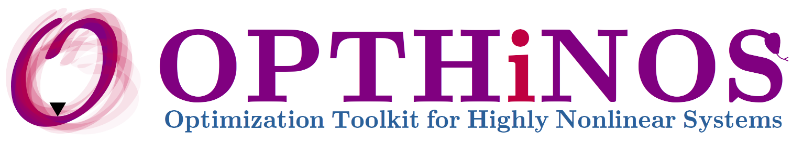

The Artificial Intelligence for Design (AI4D) Lab is a research group at the Lyle School of Engineering at Southern Methodist University directed by Prof. Karbasian.
In AI4D Lab, we use AI/ML to solve complex fluid dynamics, aerodynamics, and fluid-structure interaction (FSI) problems. These fields are the fundamental engineering problems in renewable energy, transportation, biomedical devices, air mobility, etc.
We are interested in developing novel algorithms, deep learning architectures, and mathematical models to solve inverse problems, bio-inspired designs, and large-scale optimizations.


We develope different software to employ them in our research program and engineering applications. We use our in-house CFD solver (and open-source codes, too) for flow analysis. Furthermore, we have developed a package for optimization called OPTHiNOS for sensitivity analysis, Uncertainty Quantification (UQ), and PDE-constrained optimization for highly nonlinear dynamical systems.

Lyle School of Engineering
Southern Methodist University
Dallas, TX 7505, USA